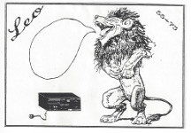
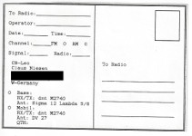

QSL
QSL
I upload logs to LOTW.
(logs may take 24h to be uploaded)
Let me know if you want an QSL card, as I don't mail them by default. I primarely send/receive cards direct however
I am participating with the following bureaus:
- 3905 Century Club Only for QSLs for contacts on 3905 Century Club nets.
(Bureau status check)
- My QSL Cards:
-

Special card for my first DX contact. My daughter is pointing out the 20m dipole antenna she build with me.
That evening I talked (phone) to E51DLD from Cook Islands with it. Pretty awesome.
-

For my initial callsign KE0LMQ I asked my daughter to draw a picture for my QSL card. I guess she was a bit inspired
by the first one. *smile*
Sent to: W2FN, N8VZ
-

I waited way to long to get the perfect design and finally just got this batch of cards made. Again, going with the theme
of dipoles and the neverending desire to get a better antenna.
Sent to: KM4IAJ, KB7AK,
N1AB, KK4KSN, N4ACE, K8EG,
K9EA, N0DQS, NN2E, K9FZ, WO9I, AA8HS
- CB Radio:
- 

In the 80's as a kid I did some CB operating and we sent each others SQL cards as well. This is my very first one.


{kind=link}
{kind=link}
{kind=link}
{kind=link}
{kind=link}
{kind=link}
{kind=link}
{kind=link}
{kind=link}
{kind=link}
{kind=link}